A warmer way to travel together
함께 떠나는 제주,
그 마음을 담은 이미지.
아이와, 반려견과, 어르신과 함께하는 여행. 따뜻한 제주를 담은 이미지 15개와 화면을 위한 벡터 12개를 한곳에서 확인합니다.
01 · Main hero
온 가족이 함께 남기는
제주의 한 장면
노을빛 바다를 바라보는 가족과 반려견. 화면에 문구를 얹기 편하도록 하늘의 여백을 살린 메인 히어로입니다.
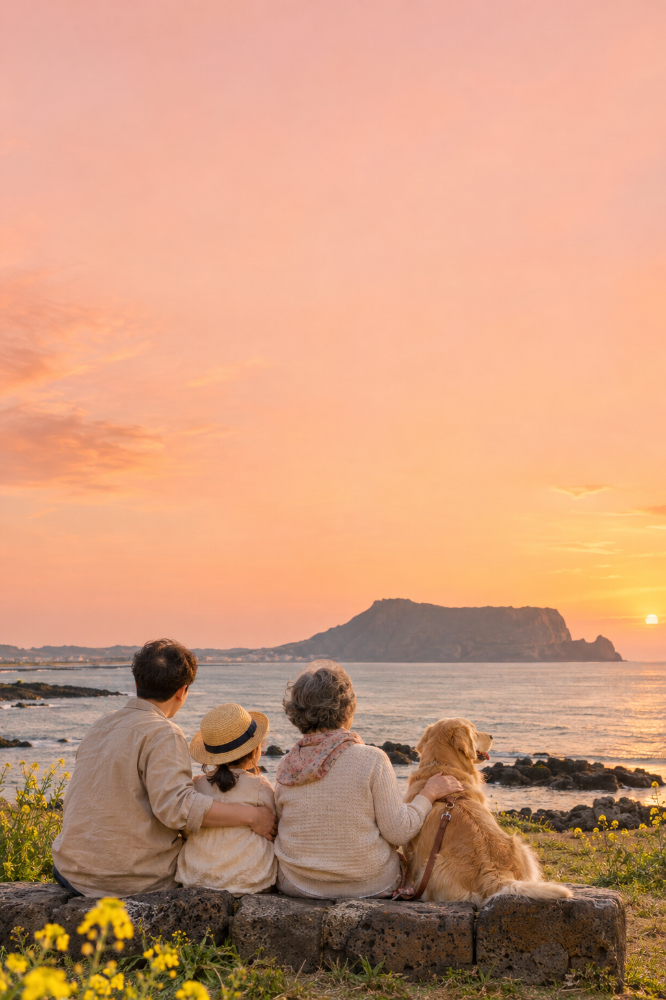
02 · Companions
누구와 함께 떠나세요?
복수 동행 선택에 사용할 캐릭터 자산입니다. 체크무늬는 투명 영역을 확인하기 위한 배경입니다.
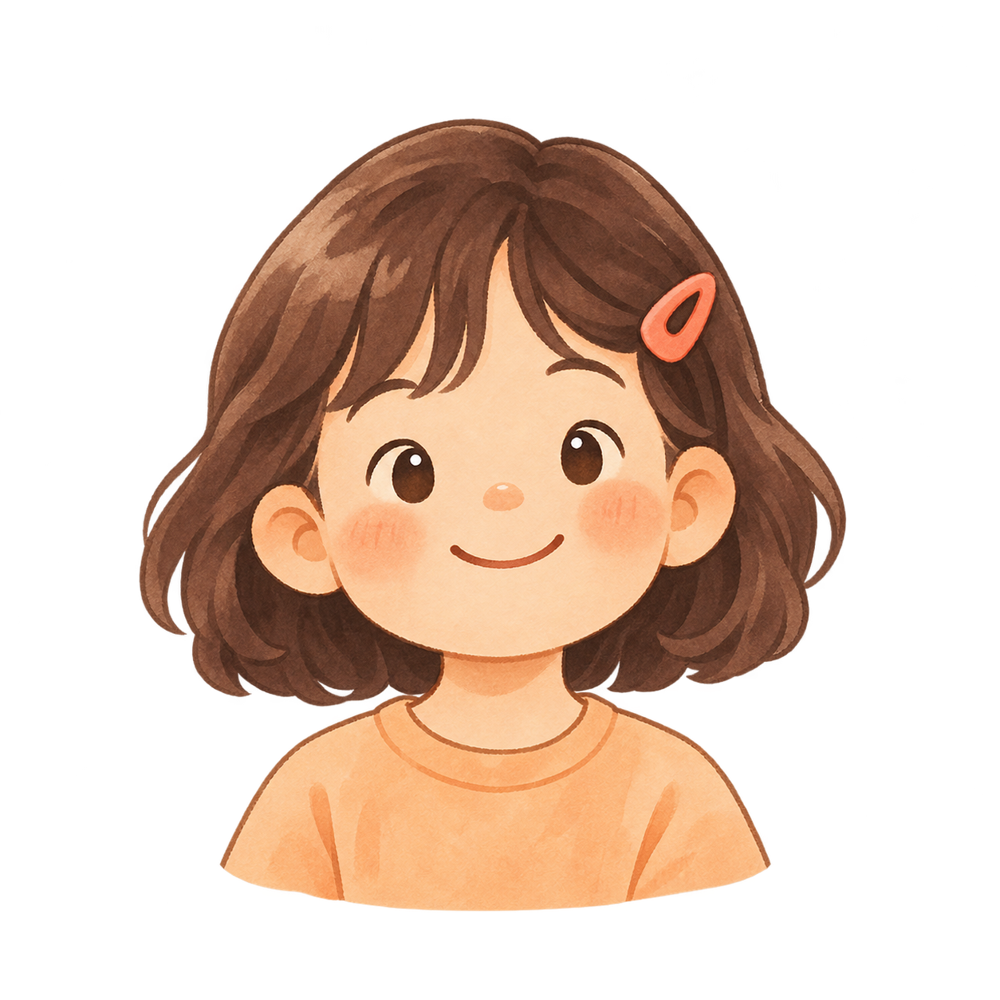
아이와 함께
반려견과 함께
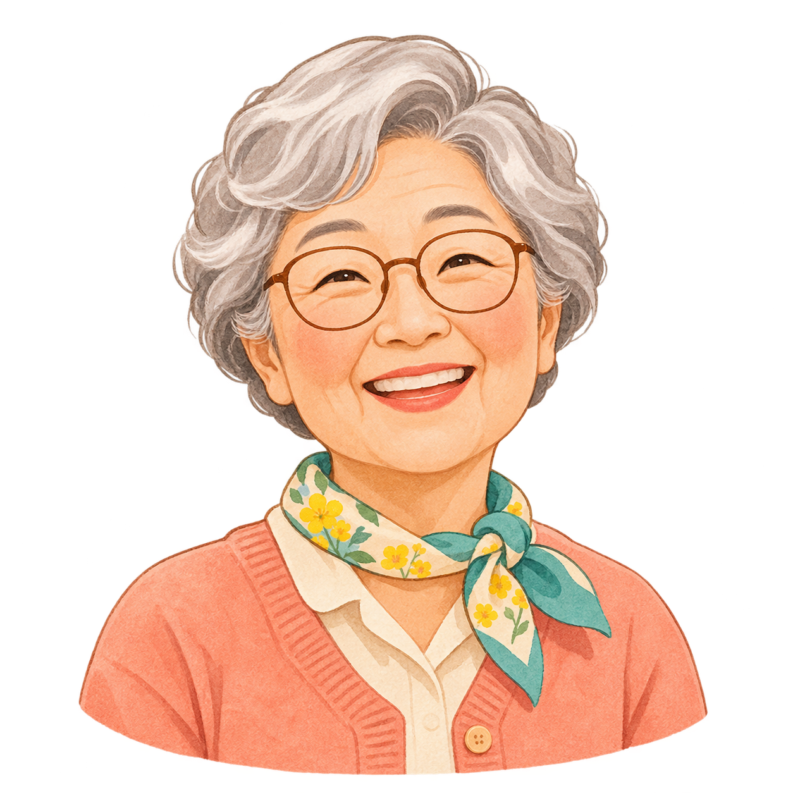
어르신과 함께
03 · Four regions
네 방향, 네 가지 제주
권역 선택을 위한 풍경 연출입니다. 실제 촬영 지점이나 특정 관광지의 안내 사진이 아닙니다.
제주 동부
제주 서부
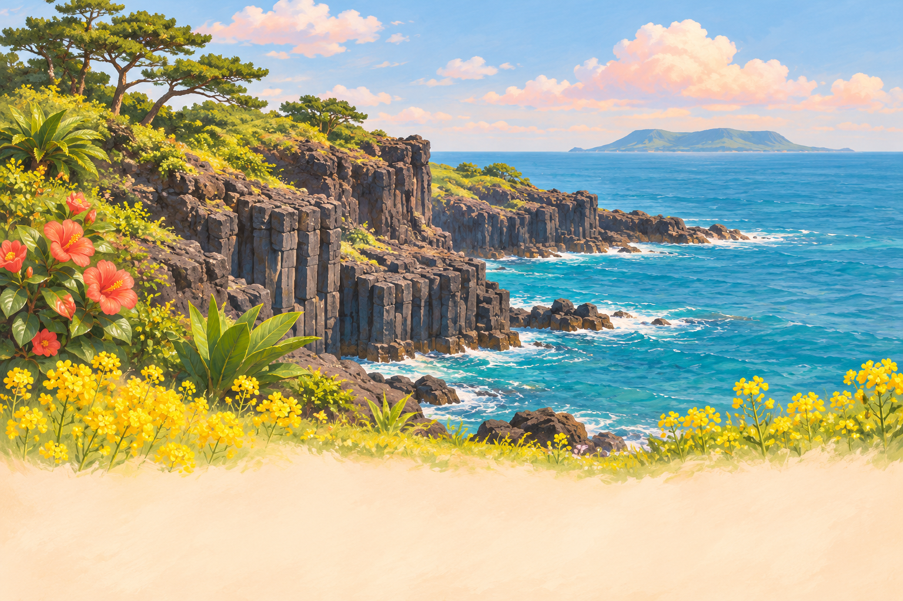
제주 남부
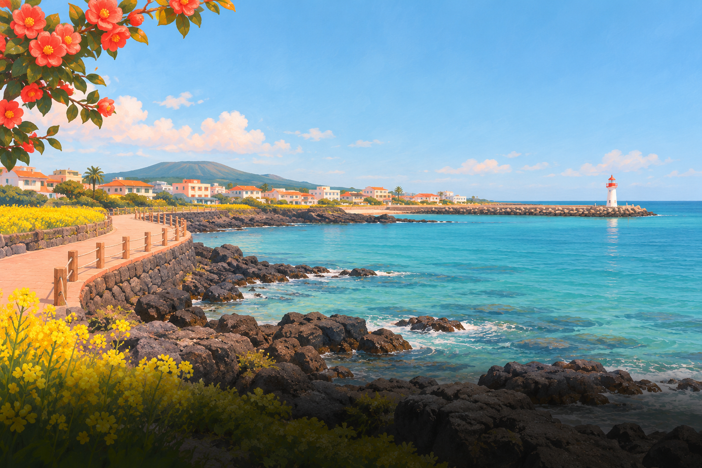
제주 북부
04 · Fictional demo places
여행 카드에 담을 장면
레이아웃과 분위기를 검토하기 위한 가상 장소 3개입니다. 실제 업소에 연결하거나 실제 시설·반려견 입장 정책의 근거로 사용할 수 없습니다.
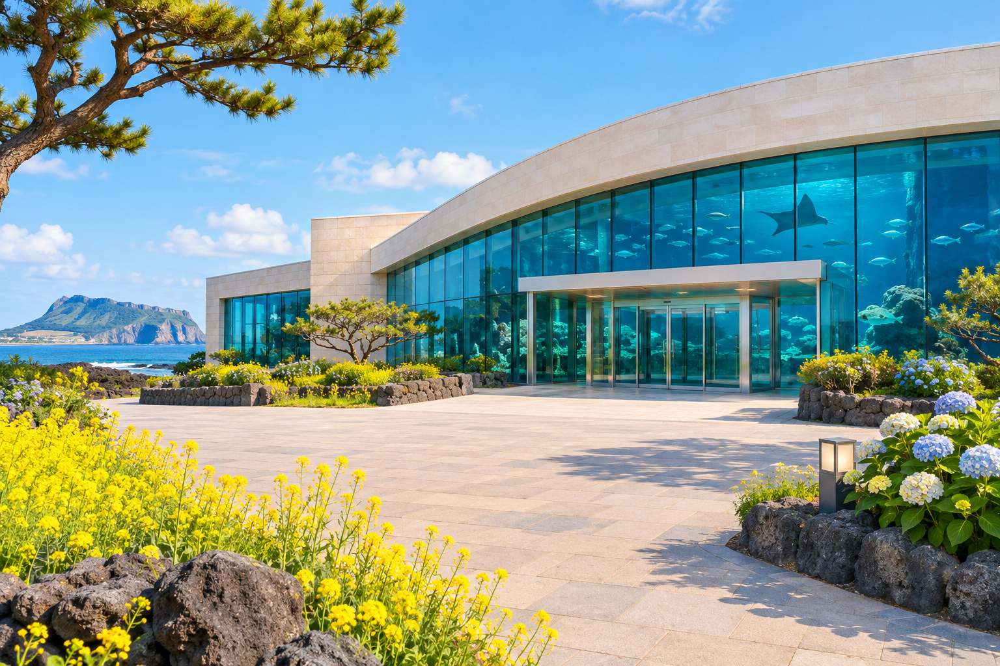
해안 아쿠아리움 콘셉트
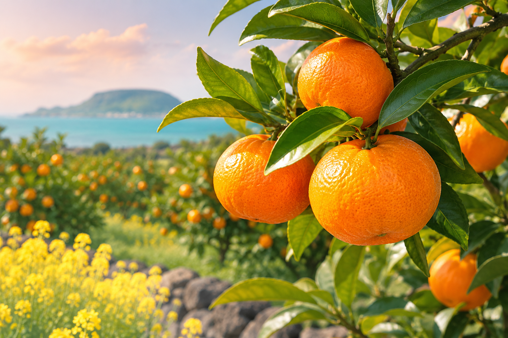
감귤 농장 콘셉트
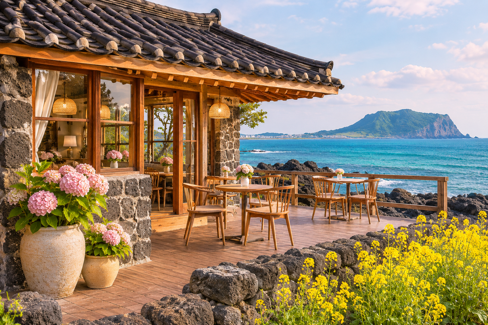
바닷가 카페 콘셉트
05 · Small details
제주다운 작은 디테일
화면 모서리와 시안 주변을 꾸미는 장식입니다. 원본 투명 배경 위에 다른 요소를 배치할 수 있습니다.
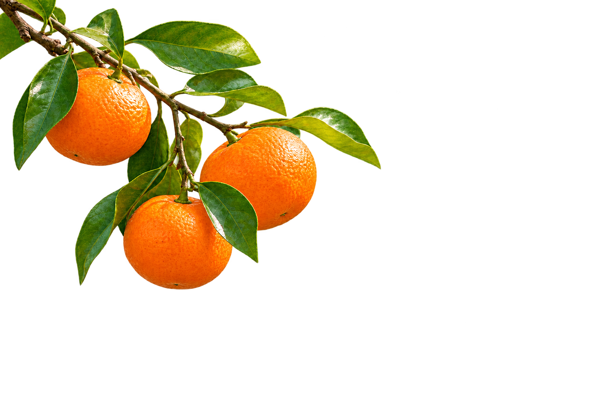
감귤 가지
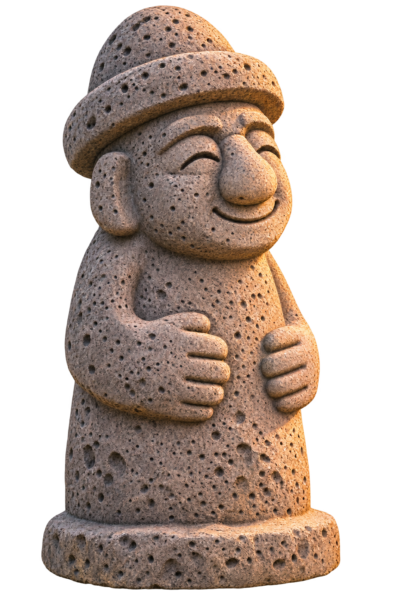
돌하르방
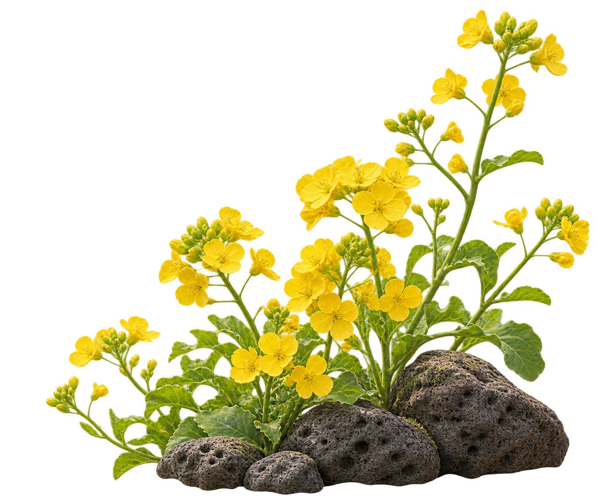
유채꽃과 현무암
06 · Wide panorama
여백에 담은 제주 바다
타이틀과 함께 사용할 수 있는 가로형 해안 파노라마 연출 이미지입니다.
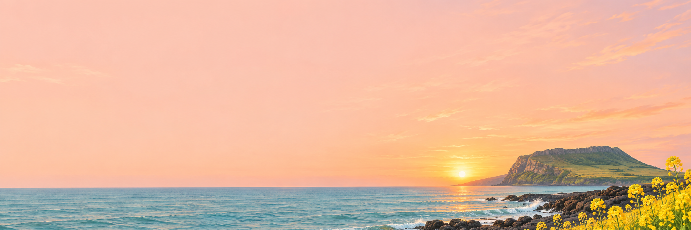
해안 파노라마 헤더
07 · Interface essentials
작고 명확한 화면 언어
문자 없는 로고와 기본 UI 아이콘입니다. 원본 SVG 12개는 24 × 24 기준, 2px의 둥근 선과 코럴 색상으로 통일했습니다.